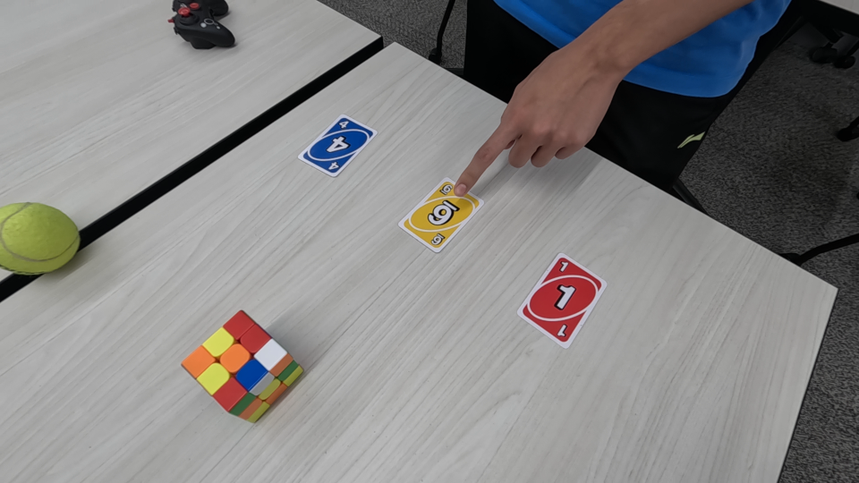
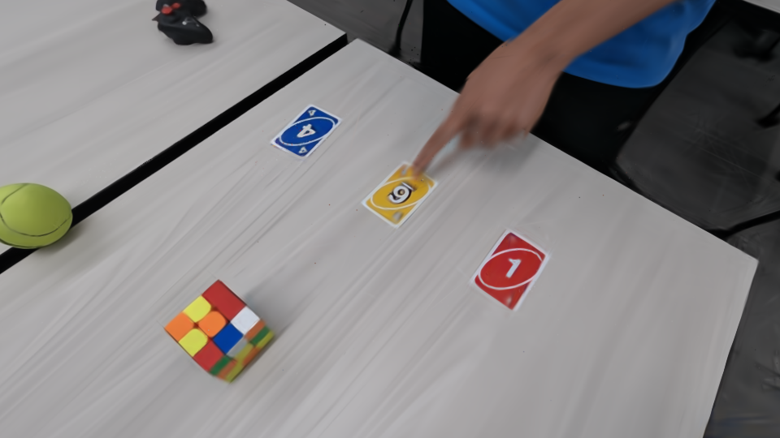
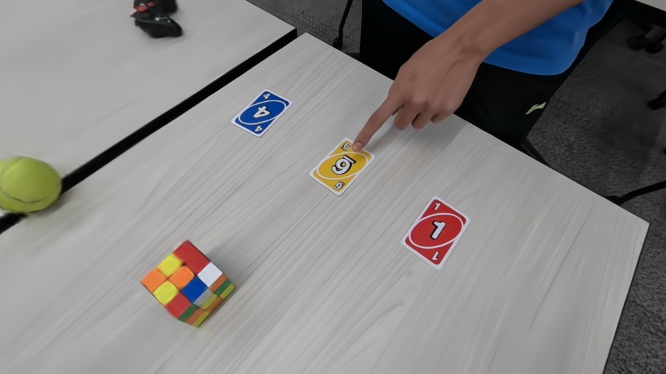
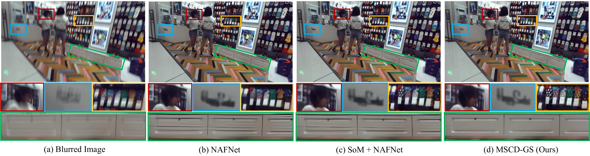
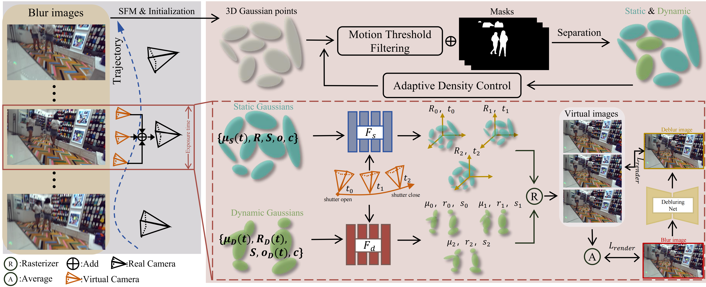

GT

BarDGS
GT

Ours

Motivation. Although the deblurring model NAFNet still exhibits suboptimal performance in deblurring motion-blurred images, it demonstrates significantly stronger deblurring capabilities when combined with the 4D reconstruction method SoM. We propose a novel 4D Gaussian deblurring method, which can render sharper images.

The pipeline of our MSCD-GS. We construct an initial Gaussian model using blurred images as input. During optimization, static and dynamic Gaussians are separated using Gaussian motion distance and dynamic masks generated by BootsTAPIR. Subsequently, we model static and dynamic Gaussian motion separately and design two motion-aware MLPs to predict their changes over exposure time, thereby generating multiple virtual sharp images. We also utilize the results from the deblurring network to constrain these virtual images. Furthermore, these virtual clear images are synthesized into a virtual blurred image to align with the input real image.


